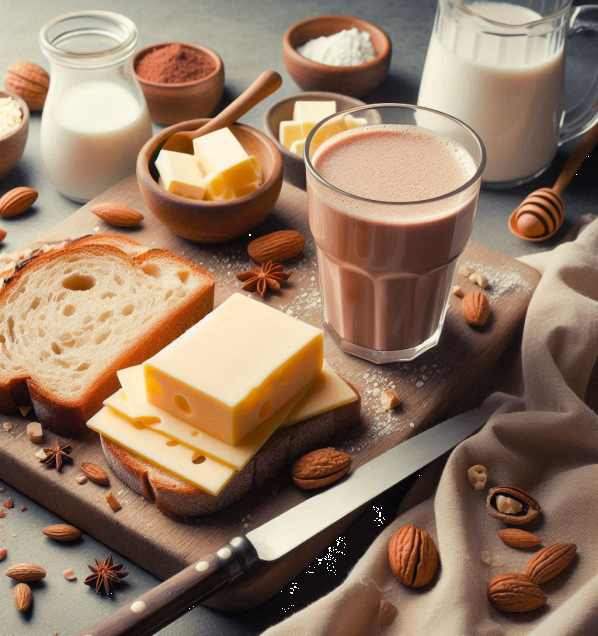

Pain et chocolat chaud
Retour au menu

Ingredientes:
- 2 plátanos maduros
- 1 taza de harina
- 1/2 taza de azúcar
Pasos:
- Precalentar el horno a 180°C.
- Mezclar todos los ingredientes en un bol.
- Hornear durante 40 minutos.